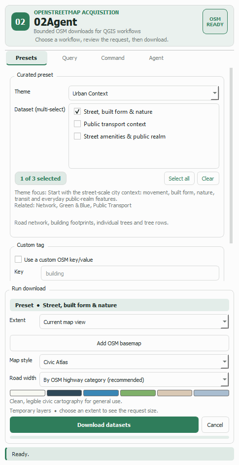
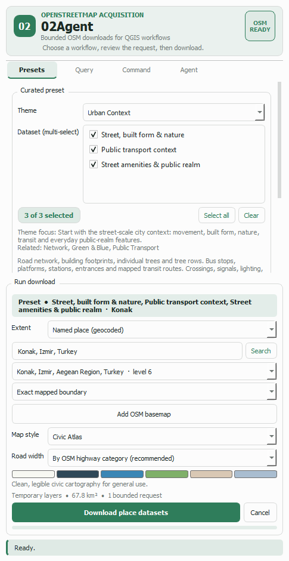

Guide 1 of 5
Three choices and one button: a theme, the datasets inside it, and the area to cover. You end up with styled point, line and polygon layers grouped in the QGIS layer tree, ready to analyse.
Click the 02Agent toolbar button. The dock opens on the Presets tab with the Urban Context theme already selected — the usual starting point, because it combines the street network, built form and street trees.
The Theme list holds 15 groups covering networks, morphology, buildings, land use, green and blue systems, public transport, healthcare, education, emergency services, heritage, tourism, sport, cycling and administrative places.
Under the theme, the grey line tells you what that theme is for and which other themes pair well with it, so you are not guessing from names alone.

Datasets are checkboxes, not a single choice. Ticking several inside one theme builds one bounded request rather than several — so asking for streets, buildings and transit together costs one download, not three.
Select all and Clear act on the visible theme, and the pill on the left keeps count. The counter matters: a request is limited to 32 tag selectors in total, and the plugin tells you plainly if a combination exceeds that instead of silently truncating it.
In Run download, the Extent list offers the current map view, the active layer's extent, or a geocoded place name (Guide 2).
Below the style controls, one line always states what is about to happen: the area in km² and how many bounded requests it needs. It updates live as you pan and zoom, so an oversized area is visible before you press Download, not after a failure.
Map style and Road width decide how results are drawn; the swatch strip previews the palette. Both settings persist between sessions. Add OSM basemap drops in the standard OpenStreetMap tile layer for context.

Press Download. The request runs as a background QGIS task, so the interface stays usable and Cancel works at any point. The progress bar advances through the download and the feature-building stage.
Results arrive as three temporary layers — points, lines and polygons — inside a new layer-tree group named after your request. Empty layers are dropped rather than added as confusing blanks, and the status line reports the feature count of each layer that survived.
Every feature carries its identity and provenance: osm_id,
osm_type, name, the preset and theme it came from, the
matched query_key/query_value, a set of common tag
columns such as building, highway and
route, and the complete original tag set as
tags_json.
Temporary means temporary Downloaded layers live in memory. To keep them, right-click a layer and choose Make Permanent, or export it to GeoPackage before closing the project.
| Message | What to do |
|---|---|
| The extent is beyond the limit | Zoom in, or split the area. See Guide 3 for how far a single job can reach. |
| The OSM server timed out | The public Overpass instances are shared and get busy. Reduce the extent or the number of datasets and retry; the plugin tries three mirrors in turn before giving up. |
| Finished — no matching features | The request succeeded but that area genuinely has none of those tags mapped. Try a broader dataset or a different area. |
| Too many combined dataset selectors | You ticked more datasets than one request allows. Select fewer, or download them in two passes. |